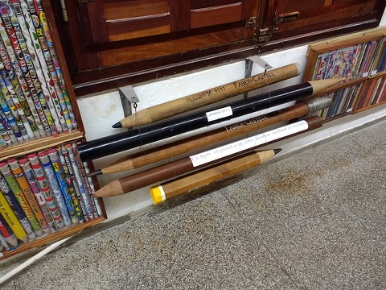
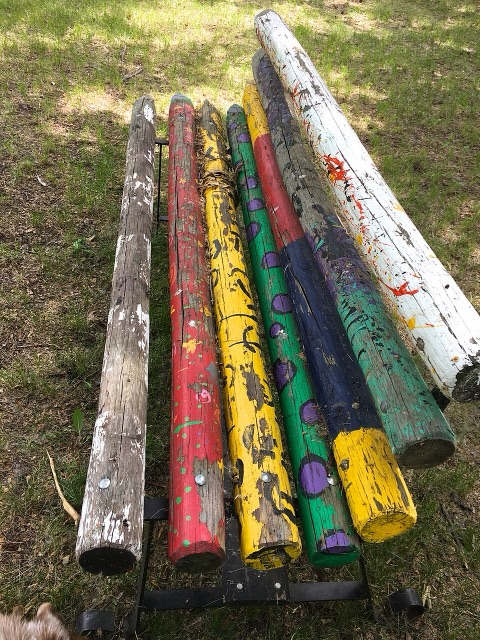
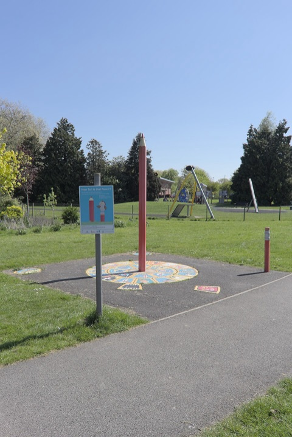
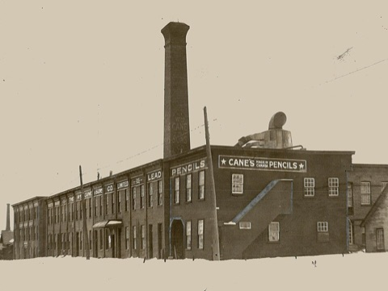
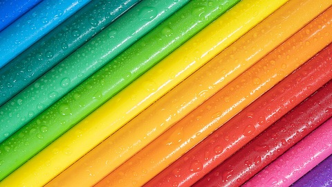
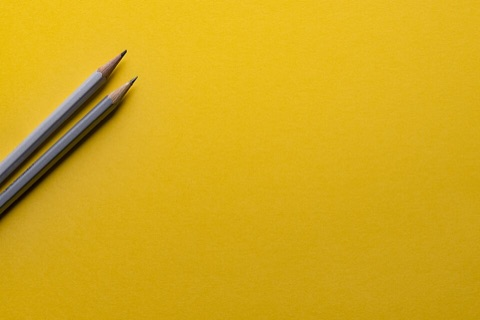

The Pencil Vault
A Field Guide to Monstrous Pencils

Most people think a pencil is seven inches long, yellow, and harmless. Most people have never been to the Vault. Every pencil on this page is REAL. Every one was photographed out in the wild by a brave soul with a camera. I have only added the science.
Keep your hands inside the page at all times. Some of these are not fully grown.
 Specimen 1: The Herd A whole herd of adult pencils, each one longer than my little brother, strung up on wires so they can't get away. Note the tiny normal-sized pencils on the left, huddled together for safety. One of the big ones has a sign on it. Nobody knows who wrote it. Nobody wants to know. The boring version: oversized pencils in the Granja Arenas museum in Uruguay, home of a world-record pencil collection. |
 Specimen 2: The Nest Seven pencils as thick as telephone poles, lying side by side on the grass. The locals call it a "bench." Ha! Look at the purple spots on the green one. Look at the splatter on the white one. Pencils do not get spots unless something has been nibbling them. Something BIG. Do not sit here after dark. The boring version: a park bench made of painted wooden posts in Mortlach, Saskatchewan. |
 Specimen 3: The Beacon A red pencil the height of a house, standing straight up in the middle of a giant painted SUN, pointing at the SKY. Even the sign next to it asks "How Tall is that Pencil?" because THEY DON'T KNOW EITHER. Off to the right, a second one is already leaning. A small stubby one waits on the edge. It's a family. It's a landing pad. It's both. The boring version: a pencil sculpture on a sun mural at a playground in Alvaston Park, Derby, England. |
 Specimen 4: The Hatchery Where do monstrous pencils come from? Here. A whole city block, a chimney you could see from space, and the words LEAD PENCILS painted on the wall in letters taller than a man. That thing on the roof is not an air vent. That is an EGG. This photo is from 1927. Where are those pencils NOW? The boring version: the Cane and Sons pencil factory in Newmarket, Ontario, photographed in 1927. |
 Specimen 5: The Sweaters A rainbow pack caught in the act of SWEATING. Normal pencils are dry. These ones are covered in little beads, all over, like they just ran a mile. My theory: they had been out moving around and got back into the box a second before the camera clicked. Colored pencils are the fastest kind. The boring version: a close-up photo of colored pencils sprinkled with water. |
 Specimen 6: The Stalkers This one looks harmless, and that's what makes it the scariest photo in the Vault. Two grey pencils, perfectly sharpened, side by side, creeping in from the edge of a big empty yellow field. Pencils hunt in PAIRS. The empty space is where their prey was standing. Count the pencils on your own desk tonight. The boring version: a stock photo of two pencils on yellow paper. |

Spotted a monstrous pencil in your town? Take a picture (from a SAFE distance) and send it to the Mothership.
Anomaly Gallery |
Celebrity Horrors |
Back to the Mothership |
Photo credits (all public domain or CC0, from Wikimedia Commons)
Specimen 1: "Museo de Granja Arenas" by Mx. Granger, CC0
Specimen 2: "Pencil Bench" by Alan Levine, CC0
Specimen 3: "Pencil sculpture and Sun mural" by Aethonatic, CC0
Specimen 4: "Cane and Sons pencil manufacturing plant, Newmarket 1927", Toronto Star, public domain
Specimen 5: "Rainbow Pencils" by Pierre Blaché, CC0
Specimen 6: "Minimal pencils on yellow" by Joanna Kosinska, CC0
www.geocities.com/Area51/Meteor/2178/pencils.html
No pencils were sharpened in the making of this page. They wouldn't let us.